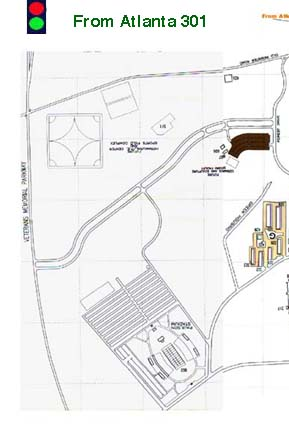
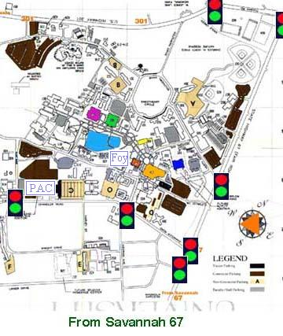

Click on the right map for directions to the Mathematical Sciences
and Physics
building and the Carter Recital Hall in Foy.
| From Atlanta on 301 North, pass through the shown traffic light at the major intersection with Vetern's Memorial. Take the second traffic light to the right on Tillman Rd and then the next one to the right onto Fair Rd. which is GA 67 South. Go one more light and turn right into campus onto Herty Dr. and then click the right map. |  |  | From Savannah on GA 67 North, pass through the light at the major intersection with Vetern's Memorial that is not shown. Pass through the light at the Hospital that is not shown. Then proceed through the lights at Gentilly and Lanier. Take the next light to your left and enter campus on Herty Dr. Click on the right map. |